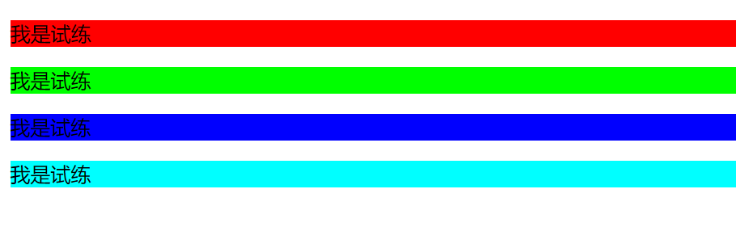
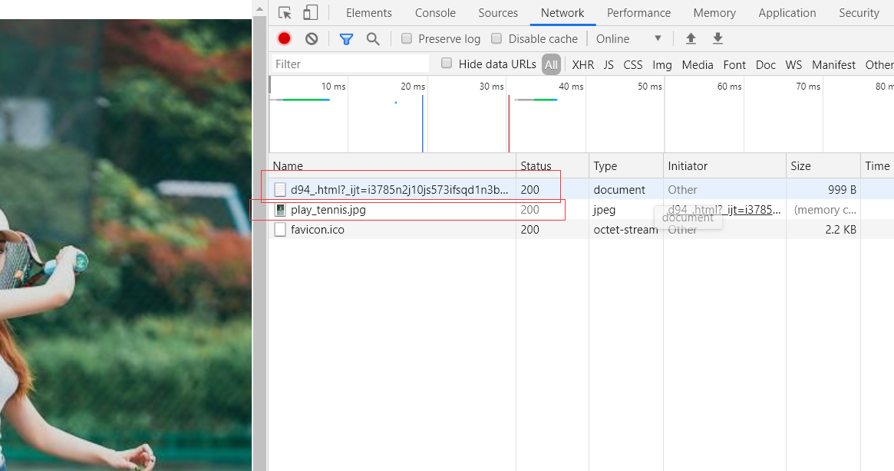
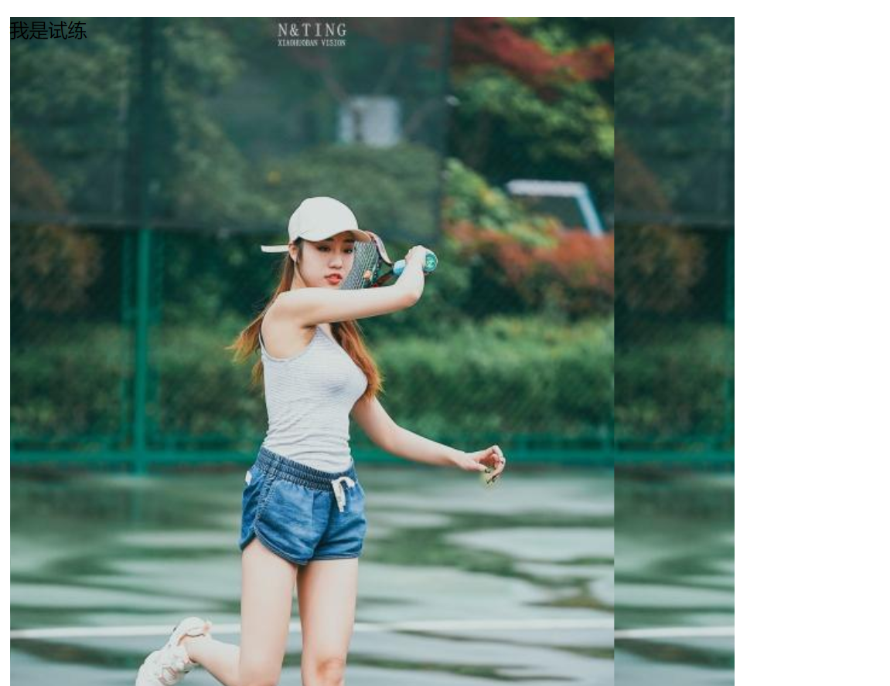
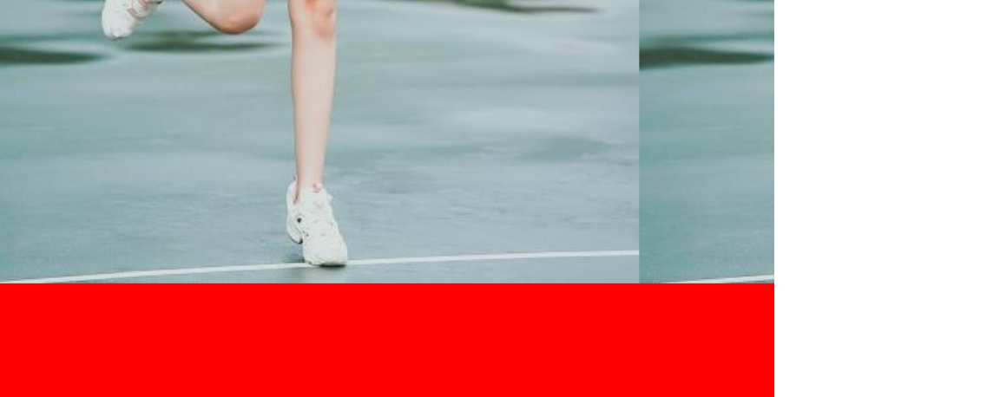

原文连接:https://www.cnblogs.com/ruigege0000/p/11410105.html
一、背景
1.如何设置标签的背景颜色
（1）在CSS中有一个background-color：属性值；，就是专门用来设置标签的背景颜色。
（2）取值：具体单词、RGB、RGBA、十六进制
例子：
<style>
.p1{
background-color: red;
}
.p2{
background-color: rgb(0,255,0);
}
.p3{
background-color: rgba(0,0,255,1);
}
.p4{
background-color: #00ffff;
}
</style>
</head>
<body>
<p class="p1">我是试练</p>
<p class="p2">我是试练</p>
<p class="p3">我是试练</p>
<p class="p4">我是试练</p>
2.如何设置背景图片？
（1）在CSS中有一个叫做background-image:url();的属性，就是专门用来设置背景图片的。
（2）注意：
i.图片的地址需要放在url（）的括号之中，图片的地址可以是本地的地址，也可以是网络的地址。
ii.如果图片的大小不足以覆盖我们要求的大小，那么就会自动在水平和垂直方向进行平铺和填充。
iii.如果网页上出现了图片，那么浏览器会再次发送请求获取图片

例子：
.p1{
height:600px;
width: 600px;
background-color: red;
background-image:url("image/play_tennis.jpg");
}
.........省略代码........
<p class="p1">我是试练</p>
3.背景平铺：我们如何设置背景图片？
（1）在CSS中有一个叫做background-repeat的属性，就是专门用来控制背景图片的平铺方式的。
取值：
repeat：默认，在水平和垂直方向上都需要平铺。
no-repeat:在水平和垂直方向上都不需要平铺。
repeat-x:只在水平方向上平铺。
repeat-y:只在垂直方向上平铺。
例子：
.p1{
height:1000px;
width: 600px;
background-color: red;
background-image:url("image/play_tennis.jpg");
/*background-repeat:repeat;!*默认情况下就是repeat,这个意思就是图片大小不变，铺满指定的区域即可*!*/
/*background-repeat: no-repeat;!*这个意思就是图片就铺一张，然后有地方没填上的就空着*!*/
background-repeat:repeat-x;
}
.........省略代码........
<p class="p1">我是试练</p>
(3)应用场景：用来做背景的多个填充。通过背景图片的平铺来降低图片的大小，提升网页访问速度
二、源码：
d94_background_color_and_image_and_tile_way.html
地址:
https://github.com/ruigege66/HTML_learning/blob/master/d94_background_color_and_image_and_tile_way.html
2.CSDN：https://blog.csdn.net/weixin_44630050（心悦君兮君不知-睿）
3.博客园：https://www.cnblogs.com/ruigege0000/
4.欢迎关注微信公众号：傅里叶变换，后台回复“礼包”获取Java大数据学习视频礼